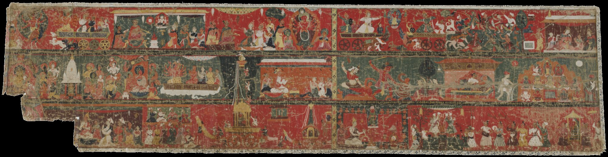

Scene 1 / …
Explore · Story Mode
The legend, scene by scene
Three registers of cloth, twenty-three scenes, one story. Read it the way the painters meant it to be read: one episode at a time, left to right, top to bottom.

Scroll to begin↓
॥ ✽ ॥
The story does not end on cloth
Each year the chariot is built anew, and Bunga Dya rides through the valley once more. The painting is one telling of a story that is still being told.